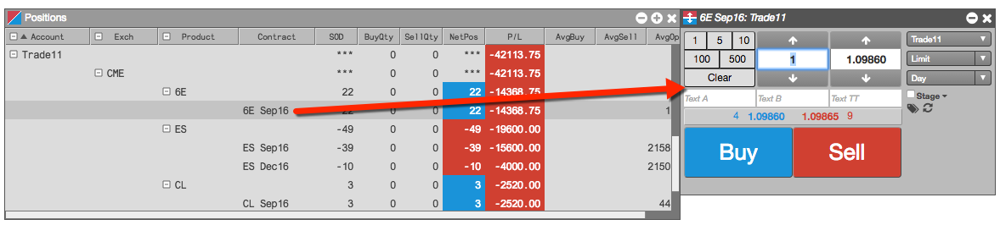

You can launch an unlinked Order Ticket from several other widgets, such as Market Grid, Time and Sales, and Positions.
To launch an unlinked Order Ticket:
From a widget, right-click an instrument row or data value to display the context menu for the desired instrument.
From the context menu, click Open, then select Order Ticket.
The Order Ticket opens for the associated instrument.
